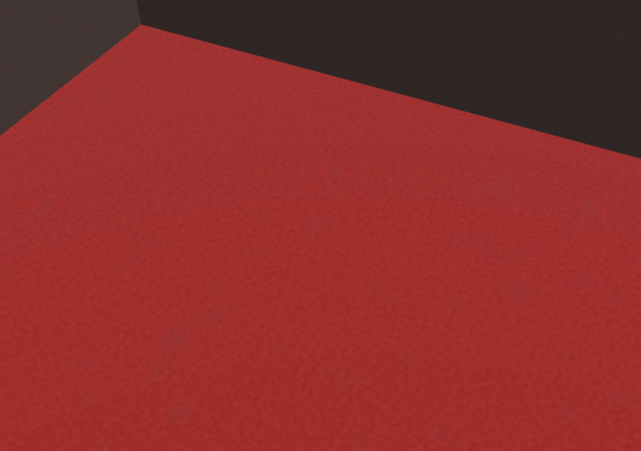
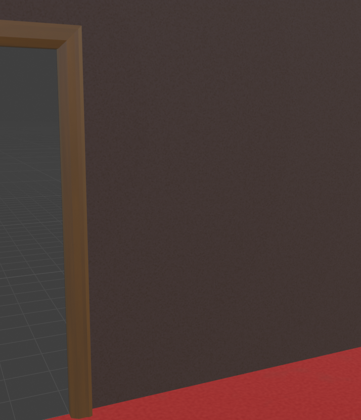
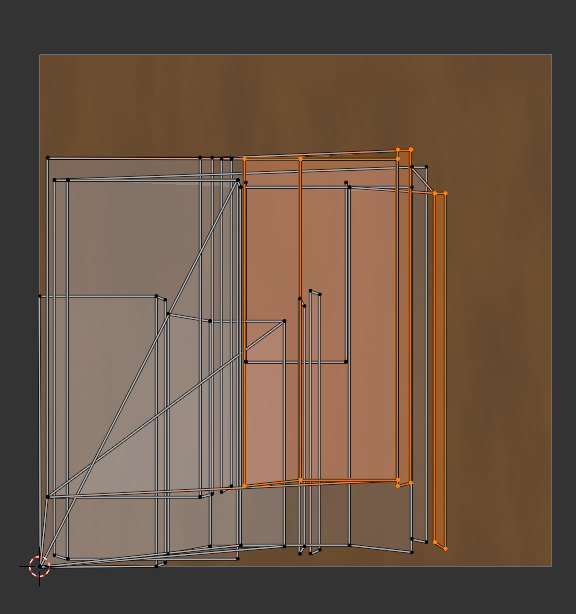
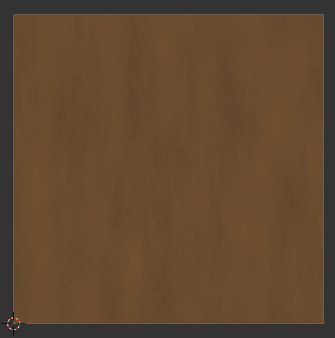
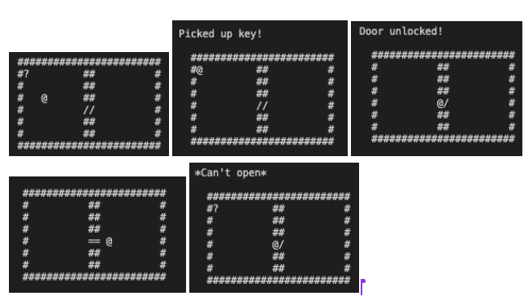

Group Status
We have integrated physics with the graphics and networking, although there still are some bugs and further testing that needs to be done. Blender models are beginning to be loaded in, such as a room with a carpet and table. Players can now turn and look around using their mouse/trackpad. Other general progress would be code and environment setup documentation, game mechanics such as keys and interactable objects (tested in the isolated ASCII game), and game timer logic.
Screenshots
Group Morale
Overall, the group morale is much more positive this week. Everyone is excited to see things finally come together and people feel more or else comfortable with the foundations implace and feel that now that the foundations are set progress will be quicker and easier moving forward. Team feels excited and slightly less stressed to tackle to next steps
Individual Reports
Art (Jasmine):
What were your contrete goals for the week?
Originally, my goal was to work on completing the gray boxing for the game because I wasn’t sure how long I would have to wait on the graphics team. However, I did not have to wait very long.
What goals were you able to accomplish?
I completely shifted because our graphics engine was able to load Blender models this week I worked on cleaning up my models and solidifying the Blender to our engine pipeline. It was a lot of technical work since I wanted to use Blender’s nodes to create procedural textures I had to learn how to bake them properly and export them so that the mtl file comes out correctly. I also dabbled with trying to bake normals, but we decided to save that as a later task if we have time.
If the week went differently than you had planned, what were the reasons? note that this happens regularly…I would prefer you to be aggressive in what you want to try accomplish rather than limit yourself to goals you know you’ll easily achieve. so answering this question is more of a reflection on the development process and the surprises you encounter, it’s not at all an evaluation.
This week went very differently since I planned on doing work with the assumption I would still be waiting, but Julie was able to quickly get the graphics engine working, so I changed tasks so we could proceed with importing models and testing that out asap.
What are your specific goals for the next week?
Finalize textures for the hotel room pieces, get all (unfurnished) hotel rooms into the engine so that programmers can work on procedurally generated maps. I will also add collision boxes for these rooms. If I have time, I will also clean up the doors and grey box the rest of the minigame rooms.
What did you learn this week, if anything (and did you expect to learn it)?
I learned a lotttt about procedural materials, baking textures, and uv mapping. I also learned about some things from the graphics team’s feedback and how I need to align my models and such so that they appear correctly in the engine.
What is your individual morale (which might be different from the overall group morale)?
I’m hyped up because I feel like I’m kind of at the point I can just pump out these models and textures and I can put in the effort to make them nice and polished. However, now I feel like I’m in a crunchy time because I need to finish the room models asap so I can focus on character and animation because that I think will take longer for me to learn. I wish I could just spend more time locking in on just this class because I’m enjoying learning and seeing the results of my labor but unfortunately I do have to do my other homework sometimes lol. So excited! (The textures are very subtle but I think will look nicer than flat colors, I also still have to tweak some more settings on the materials) (also some of these changes have not been added to the engine version of these models yet)
Nodes for carpet texture:
Carpet Texture:
Wall and doorframe texture:
UV mapping (a little gross but its ok this is for a doorframe):
Wood texture:
Music (Annie):
What were your contrete goals for the week?
Get the general SFX in such as unlocking doors or UI button interactions.
What goals were you able to accomplish?
I’m able to make a draft of the swamp ambience track. You can check it out in the gallery section of the website
If the week went differently than you had planned, what were the reasons? note that this happens regularly…I would prefer you to be aggressive in what you want to try accomplish rather than limit yourself to goals you know you’ll easily achieve. so answering this question is more of a reflection on the development process and the surprises you encounter, it’s not at all an evaluation.
Didn’t have the time to test out the audio implementation yet and plus I’m waiting for the team to fix their C-make file so that I can safely build the project from my end.
What are your specific goals for the next week?
Revising my swamp track and draft the track for the circus room. As well as getting the SFX for the door.
What did you learn this week, if anything (and did you expect to learn it)?
I learned that using horse samples in my swamp ambience can make a good horror effect.
What is your individual morale (which might be different from the overall group morale)?
I feel a little less stressed than before. Feel like I can freely experiment more.
Graphics (Gabriel):
What were your concrete goals for the week?
My goal for the week was to understand the new source code, get it to run on my machine and abstract the draw cube function so that it may be called from anywhere in the game engine.
What goals were you able to accomplish?
I read and studied the source code and managed to make it work on my machine (although that took me longer than expected). I didn’t abstract the draw cube function seeing that it might not need to be abstracted. There’s now support for models, so I don’t think we need to work with the cube function anymore.
If the week went differently than you had planned, what were the reasons? note that this happens regularly…I would prefer you to be aggressive in what you want to try accomplish rather than limit yourself to goals you know you’ll easily achieve. so answering this question is more of a reflection on the development process and the surprises you encounter, it’s not at all an evaluation.
My laptop died halfway through the week and I had to get it fixed. This delayed some work, since I had to catch up to the progress I had lost. My laptop is working fine now, so hopefully this doesn’t happen again.
What are your specific goals for the next week?
My goal for this week is to get a timer display to show up on screen. My top priority right now is getting text to be rendered, and if that’s figured out before next week, my next goal is to have a text that updates according to the game timer.
What did you learn this week, if anything (and did you expect to learn it)?
I started researching text rendering with OpenGl and learned that it’s a trickier task than it sounds. Going forward I should keep this in mind.
What is your individual morale (which might be different from the overall group morale)?
I’m excited to have a tangible graphics-related goal that I can focus on and work towards.
General Game Implementation and Mini Games (William):
What were your contrete goals for the week?
Implement ASCII versions of our key class, room class, door class, player class, and interactable class.
What goals were you able to accomplish?
ASCII versions for all classes have been implemented to allow basic playability. Functionality for interact() and handleInteract() is implemented in the ASCIIgame file, will have not integrate this into the handleInteracts for each class. Press ‘e’ to pick up key, press ‘e’ to unlock door, press ‘e’ to open door.
If the week went differently than you had planned, what were the reasons? note that this happens regularly…I would prefer you to be aggressive in what you want to try accomplish rather than limit yourself to goals you know you’ll easily achieve. so answering this question is more of a reflection on the development process and the surprises you encounter, it’s not at all an evaluation.
Wanted to also get started on assisting in networking and physics. Still need to understand how physics classes work and how we can implement it into our current classes. So far our design choices seem to be viable.
What are your specific goals for the next week?
Clean up code and see how we can translate ASCII implementation of classes to the real game. Team should be close to completely integrating networking, graphics, and physics. If not working on this, I hope to work on the mini-game class next.
What did you learn this week, if anything (and did you expect to learn it)?
I learnt more about game design. Our mini-games team met up to discuss some design changes for our door and room class, and also discussed game finishing mechanics regarding the final door.
What is your individual morale (which might be different from the overall group morale)?
Feeling good. Our graphics and physics team are doing great work, and it seems we basically have a good foundation to work with. Hopefully the actual game implementation will go smoothly as well.
General Game Implementation and Mini Games (Ravi):
What were your contrete goals for the week?
My goals were to finish the key class, get the auto-formatter tutorial up, add a player death mechanism, and start working on implementing minigame 1.
What goals were you able to accomplish?
I added the key class, the object class (more info later), and I made good progress integrating the component classes (Door, Room, Interactable, Key) with our server/client setup.
If the week went differently than you had planned, what were the reasons? note that this happens regularly…I would prefer you to be aggressive in what you want to try accomplish rather than limit yourself to goals you know you’ll easily achieve. so answering this question is more of a reflection on the development process and the surprises you encounter, it’s not at all an evaluation.
The week did go differently than I had planned, because we realized we needed to integrate the component classes with our server and client. Most of my goals ended up being put aside to get this done. Originally, we just had one file for each class, but now my goal was to split it up by what was actually needing to be done on the client and server, and how to integrate them. I have not completely finished this yet, but I have made good progress. I met with Helen and William, and we decided to implement all non intractable pieces as one class called an Object class. This can be everything from chairs to statues to anything else that sits still in a room, but all that changes between each one are the texture and rigidbody that get applied to them during initialization. I have pretty much finished the Object class, and I’m going to push it with the rest of the component integration. This work all went a bit slower than I had hoped, but I am not surprised because the integration meant I had to understand the physics and server integration that Brandon and Julie had done. While I do understand it a lot better now, I’m still a little unsure about what is the best practice for exactly where to handle everything, especially when it comes to parsing the JSON and calling different methods.
What are your specific goals for the next week?
My goals for next week are to finish this integration, add in the death mechanic, help create the map and add in the logic for it, and help finish minigame 1.
What did you learn this week, if anything (and did you expect to learn it)?
I learned a lot more about the physics and server/client logic, as well as learning about aggregate initialization of structs.
What is your individual morale (which might be different from the overall group morale)?
While I didn’t get quite as much accomplished this week as I had hoped, my spirits are still high, and it’s good to be slotting everything together. I am excited to be able to see all the logic work with the client and server. Overall I am feeling good.
Physics (Brandon):
What were your contrete goals for the week?
My concrete goal for the week was to integrate physics into the graphics and networking implementations. Additionally, if time availed, I wanted to implement the Blender bounding box pipeline.
What goals were you able to accomplish?
I was only able to integrate the physics, and have yet started on the Blender bounding box pipeline. The physics is fully integrated and documented, but there are some bugs that need to be addressed, such as the character slightly moving forward when jumping.
Physics working with graphics and networking:
If the week went differently than you had planned, what were the reasons? note that this happens regularly…I would prefer you to be aggressive in what you want to try accomplish rather than limit yourself to goals you know you’ll easily achieve. so answering this question is more of a reflection on the development process and the surprises you encounter, it’s not at all an evaluation.
Integration took long, which I expected, but it took longer than I expected to just transfer all the code I had implemented independently and clean up. Understanding the networking code was rather intuitive and easy to integrate with, which I didn’t think it would be.
What are your specific goals for the next week?
My specific goals for next week are to implement the Blender bounding box pipeline, implement map generation based on the assumptions of room sizes, and, if time allows, fix the bugs in the physics. Additionally, I want to look for opportunities to help out in other areas, especially in integration.
What did you learn this week, if anything (and did you expect to learn it)?
Integration takes time, but it isn’t all about stitching code to someone else’s code but also the clean up and the gradual iteration of stitching code and testing if the overall codebase still works. Normally, I would probably have just implement ALL my code and then fix from there, but implementing part of my code, testing, and fixing was a lot more manageable and adaptable.
What is your individual morale (which might be different from the overall group morale)?
I am feeling very hopeful in this project. Integration was a lot smoother than I thought, and the foundations of our engine are coming together well. I feel like once we get the foundations set then a lot of play testing and experimenting will be possible. The vision is becoming more clear. Also, the team is amazing to work with. Communication has been great in my experience and the code is easy to manage.
General Game Implementation and Mini Games (Helen Lin):
What were your contrete goals for the week?
The goal for the week was to pick up the speed on implementation and get started on the mini game implementation
What goals were you able to accomplish?
Ravi, William and I during Thursday when we met again as a big group to rediscussed some class structures and what goes in the server side or client side of the class objects and whether or not we needed certain classes. This discussion also lead us to redefine the ending of the game as we were discussing the Key object class and how to handle which key unlocks which door and how that connects to the final door, which defines the successful end of the game. We decided on that all players must press a button near the final door once all the keys are in place for them to successfully open up the door to end the game. This way the player would all be at the door at the end. I updated out minigame spec dock with these details and also communicated over to Jasmine about the assets we need. I got started on some of the documentation for the functions while reading through and understanding Julie’s client and server code and then Julie took over with writing the remainder of the documentation. Got started on setting up the class for the first Mini game.
If the week went differently than you had planned, what were the reasons? note that this happens regularly…I would prefer you to be aggressive in what you want to try accomplish rather than limit yourself to goals you know you’ll easily achieve. so answering this question is more of a reflection on the development process and the surprises you encounter, it’s not at all an evaluation.
I wished I made a bit more progress on the swamp mini game set up but as I was writing it just re learning c++ took some time and also figuring out in what format to store variables and also whether or not certain functions should reside within that class or outside, which should hopefully get better as understanding of the code base increases. Like for the server side of the swamp which I envision handling the computation and logic necessary for the swamp game but that requires communication with the client and server and the communication logic I’m still deciding whether to have the server/client class do the initial message parsing then passing the message to the Swamp mini game class which then just handles the data. But this would mean that the server/client needs access to the instance of the swamp object instance.
What are your specific goals for the next week?
I’m hoping to get an initial version of swamp class done. Making sure that the client and server are communicating the events related to the swamp game.
What did you learn this week, if anything (and did you expect to learn it)?
Just learning more about c++ and things that I have forgotten about c++. Expected to learn this since my work this week was getting into coding.
What is your individual morale (which might be different from the overall group morale)?
I’m feeling hopeful. Looks like a lot of progress has happened and graphic wise and physics wise things are coming together and working faster. Feels really nice to see things start to come together at least visually.
Graphics & Network (Julie):
What were your contrete goals for the week?
The main goals for this week were to load Jasmine's models and textures, implement mouse input to allow players to change their facing and view directions (yaw and pitch), and ensure that the code runs smoothly on the school lab computers as well as on all of our team members' machines.
What goals were you able to accomplish?
First, I made the game window resizable. I quickly realized we needed to resize the window without causing errors, especially to open and view multiple windows side-by-side for multiplayer testing. To handle this, I added a framebuffer size callback that gets triggered whenever the window size changes and dynamically updated the camera's aspect ratio to match.
Next, I loaded Jasmine's models and materials using Assimp. I created a Model class and a SubModel struct to properly handle different materials for each submodel within a model. For example, a room model contains submodels like the carpet, doorframe, and walls, each with their own textures. I handled texture loading separately using stb_image.
After that, I implemented mouse input handling so players can freely look around and change their facing direction. I set a cursor position callback that updates the player's yaw and pitch values whenever mouse movement is detected. During each frame of the main game loop, the client sends its yaw information to the server. The server then updates and broadcasts the players' new facing directions to all connected clients, and the clients update their rendering accordingly.
I also implemented Esc key functionality. At the start of the game, the mouse is locked and the cursor is hidden to allow players to control their view and facing direction. Pressing Esc toggles mouse lock/unlock: when unlocked, the cursor becomes visible and free to move, but players can no longer change their view direction.
During the last meeting, I learned that the server should process all messages received from clients, not just one message per client per tick. I updated the server logic to process all pending messages per client each tick.
After talking with the professor, I realized I didn't need two threads on the server. Originally, I had used two threads–one running ioContext.run() to handle all asynchronous networking events, and another running a manual while loop to process and broadcast player updates at a fixed tick rate. Since both ioContext.run() and the while loop were blocking operations, I needed a second thread and a mutex to coordinate between them. To simplify the design, I decided to refactor the server: I replaced the manual while loop with an asynchronous ticking system using a boost::asio::steady_timer. Now, ticking is triggered asynchronously at a fixed interval, processing all gathered messages and broadcasting player updates. Both networking and ticking are now handled within a single thread by ioContext.run().
Lastly, I created a README file for setup instructions and game controls, and added documentation comments for all the code I wrote in the header files.
If the week went differently than you had planned, what were the reasons? note that this happens regularly…I would prefer you to be aggressive in what you want to try accomplish rather than limit yourself to goals you know you’ll easily achieve. so answering this question is more of a reflection on the development process and the surprises you encounter, it’s not at all an evaluation.
The week went okay, but looking back, I feel like I could have pushed myself a little more.
What are your specific goals for the next week?
Next week, I'm planning to keep loading models into the project as they get ready. Once the ASCII map is finished, I'll read it in and use it to spawn models in the world based on the layout, translating the grid into actual positions. I'll also work with Brandon to help set up collision boxes created in Blender. I also plan to add lighting and shadows to make the scene look even better. If needed, I'll implement client-side prediction to make movement feel more responsive, with confirmation from the server later.
What did you learn this week, if anything (and did you expect to learn it)?
I'm a Mac user (I've barely used Windows in my life), so this week I spent a lot of time in the CSE building working on the lab computers to familiarize myself with the Windows and Visual Studio environment. I also wanted to make sure our code ran smoothly on the lab machines. It was fun learning a new environment and working toward making our project fully cross-platform. This also helped me write setup instructions for both Mac and Windows users in the README file.
What is your individual morale (which might be different from the overall group morale)?
Throughout the week, I communicated a lot with Jasmine and Brandon. It was an amazing experience –something I hadn't really experienced before when working on individual projects. Jasmine is an amazing artist, and I feel so blessed to be working with her. Brandon also did a great job seamlessly integrating physics with the network, which made it much easier for me to continue building the networking and graphics afterward. Overall, our team is very supportive and passionate, and I'm really grateful and excited to keep working on this project with them.